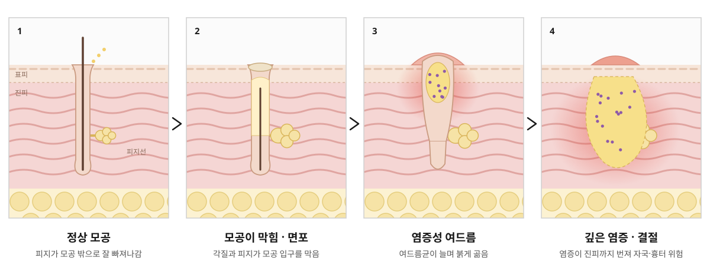
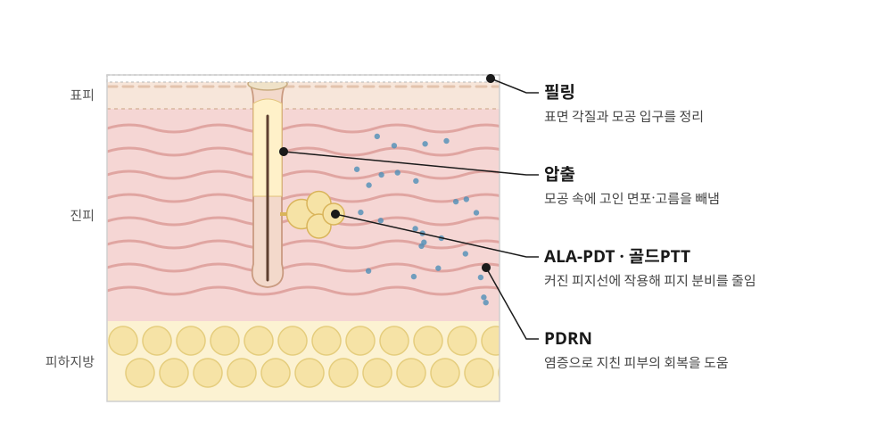

01 · 모공 막힘
압출
모공 속 면포와 고름을 빼냅니다
소독한 전용 기구로 모공 속에 고인 피지 덩어리(면포)와 고름을 빼냅니다. 손으로 짜면 염증이 깊어지거나 자국이 남기 쉬워, 피부 손상을 줄이며 정리하는 것이 중요합니다.
이런 여드름에 · 좁쌀 여드름, 곪은 여드름
홈 > 피부미용 > 여드름 > 여드름
원인을 나눠 단계별로, 압출 · 필링 · ALA-PDT · 골드PTT · PDRN
ACNE
여드름은 각질과 피지가 모공 입구를 막으면서 시작됩니다. 막힌 모공 안에 피지가 고이면 여드름균이 늘어나고, 염증이 생기면 붉게 곪거나 진피까지 번지기도 합니다. 염증이 깊을수록 붉은 자국과 패인 흉터가 남기 쉽습니다.
갈창림한의원은 야누스프로 피부 분석으로 피지와 포피린(여드름균이 만드는 물질), 모공 상태를 확인한 뒤 모공 막힘 · 피지 · 염증 · 회복 단계에 맞춰 압출, 필링, ALA-PDT, 골드PTT, PDRN을 조합합니다.
여드름은 한 가지 시술보다 원인에 맞춘 조합이 중요합니다.

APPROACH
시술마다 피부 속에서 작용하는 곳이 다릅니다.

| 원인 | 이런 상태 | 주로 쓰는 치료 |
|---|---|---|
| 모공 막힘 | 좁쌀 여드름, 블랙헤드·화이트헤드 | 압출 · 필링 |
| 피지 과다 | 번들거리고 같은 자리에 여드름이 반복됨 | ALA-PDT · 골드PTT |
| 여드름균 · 염증 | 붉게 부어오르거나 곪은 여드름 | 압출 · ALA-PDT |
| 지친 피부 | 염증 뒤 예민해지고 회복이 더딘 피부 | PDRN |
TREATMENT
01 · 모공 막힘
모공 속 면포와 고름을 빼냅니다
소독한 전용 기구로 모공 속에 고인 피지 덩어리(면포)와 고름을 빼냅니다. 손으로 짜면 염증이 깊어지거나 자국이 남기 쉬워, 피부 손상을 줄이며 정리하는 것이 중요합니다.
이런 여드름에 · 좁쌀 여드름, 곪은 여드름
02 · 모공 막힘
각질과 모공 입구를 정리합니다
각질을 부드럽게 녹이는 필링제로 모공 입구를 막는 각질과 피지를 정리합니다. 모공이 다시 막히는 것을 줄이고, 거칠어진 피부결을 고르게 합니다. 피부 상태에 맞춰 세 가지 필링 가운데 고릅니다.
이런 여드름에 · 좁쌀 여드름, 거친 피부결
03 · 피지 · 염증
피지선과 여드름균에 작용합니다
빛에 반응하는 성분(ALA)을 바르고 일정 시간 흡수시킨 뒤 블루라이트를 쬡니다. ALA는 피지선과 여드름균에 많이 모이는데, 빛을 받으면 반응하며 피지 분비와 염증을 줄입니다.
광원 · 블루라이트
이런 여드름에 · 염증성 여드름, 피지가 많은 피부
04 · 피지
금 입자로 피지선을 겨냥합니다
아주 작은 금 입자를 모공 속까지 스며들게 한 뒤 1064nm 롱펄스 레이저를 조사합니다. 금 입자가 빛을 받아 열을 내며 피지선에 작용하고, 주변 피부의 손상은 줄입니다. 시술 후 빛을 피해야 하는 기간이 따로 없습니다.
사용 장비 · 악센토N (1064nm 롱펄스)
이런 여드름에 · 반복되는 여드름, 피지 과다
05 · 회복
지친 피부의 회복을 돕습니다
연어에서 얻은 재생 성분 PDRN으로 염증으로 예민해진 피부의 회복을 돕습니다. 여드름 치료 중 생기기 쉬운 붉은 자국과 피부 손상 관리에도 함께 활용합니다.
PDRN·엑소좀 보기 →이런 피부에 · 예민해진 피부, 회복이 더딘 피부
COMPARE
둘 다 피지선에 작용하지만 원리와 시술 후 관리가 다릅니다.
| 구분 | ALA-PDT | 골드PTT |
|---|---|---|
| 원리 | 빛에 반응하는 성분 + 블루라이트 | 금 입자 + 1064nm 롱펄스 레이저(악센토N) |
| 작용하는 곳 | 피지선, 여드름균 | 피지선 |
| 이런 경우에 | 붉게 곪는 염증성 여드름이 많을 때 | 피지가 많고 여드름이 반복될 때 |
| 시술 후 | 하루 정도 강한 빛 피하기, 일시적 붉음·각질 | 빛을 피하는 기간 없이 바로 일상생활 |
※ 피부 상태에 따라 두 시술을 함께 쓰기도 합니다.
PROCESS
CAUTION
※ 필요한 시술 횟수와 효과는 여드름의 상태와 피부에 따라 개인차가 있습니다.
NEXT
염증이 가라앉은 뒤 남은 자국과 흉터는 따로 관리합니다.
FAQ
손으로 짜면 모공 벽이 터지며 염증이 깊어지거나 자국과 흉터가 남기 쉽습니다. 빼내야 하는 여드름은 소독한 기구로 피부 손상을 줄이며 압출하는 것이 좋습니다.
여드름의 종류와 피지 상태에 따라 다르며, 보통 1주 간격으로 여러 번 받으면서 경과를 확인합니다. 분석 후 예상 횟수를 안내해 드립니다.
피부에 남아 있는 ALA 성분이 빛에 계속 반응하면 붉음이나 자극이 심해질 수 있습니다. 그래서 시술 후 하루 정도는 햇빛과 강한 조명을 피해 주세요.
붉게 곪는 염증성 여드름이 많다면 ALA-PDT를, 피지가 많고 여드름이 반복된다면 골드PTT를 먼저 고려합니다. 피부 상태에 따라 두 시술을 함께 쓰기도 합니다.
여드름은 피지, 호르몬, 생활 습관의 영향을 받아 다시 생길 수 있습니다. 치료와 함께 세안, 보습, 생활 관리 방법을 안내해 드립니다.
작성·검토갈창림 대표원장 (한의사)최종 검토 2026년 10월